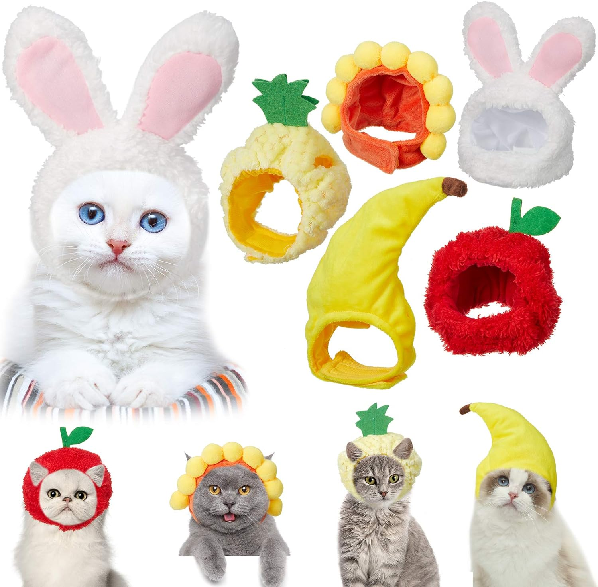
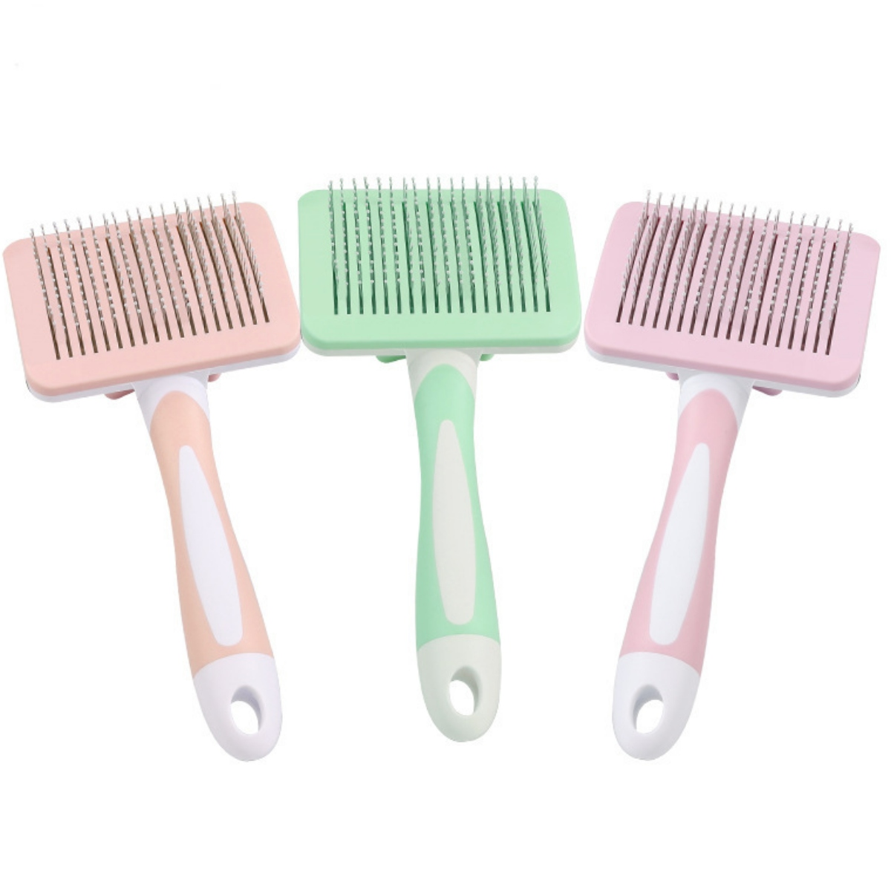
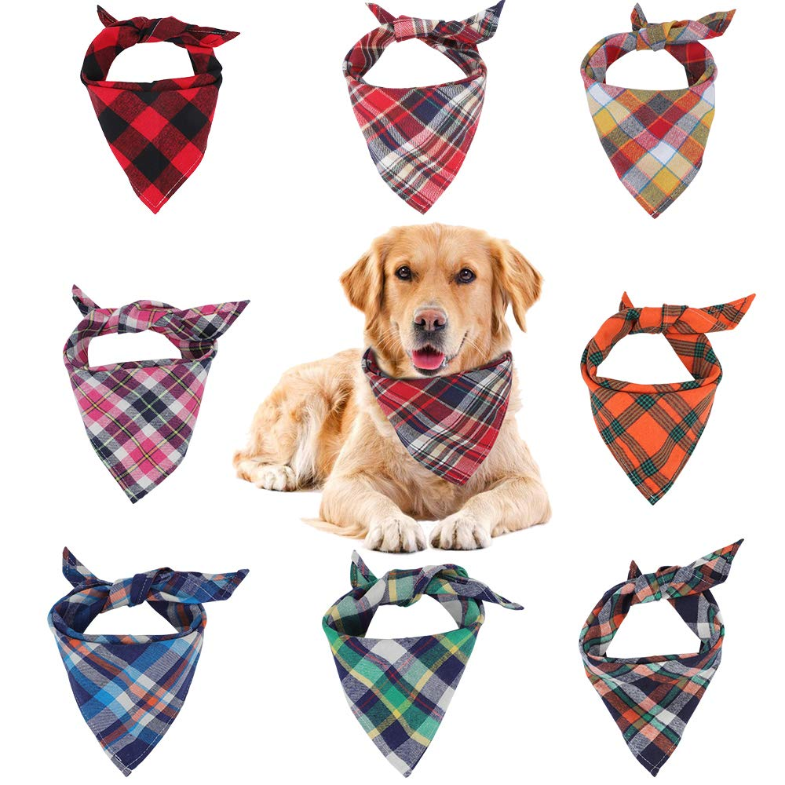

Nuestros Accesorios
Utilidades de los accesorios

Diseñados para perros que disfrutan mordiendo, estos juguetes ayudan a mantener sus dientes limpios y a reducir la ansiedad. Pueden estar hechos de goma, nylon o materiales naturales.

Hechos de lana o materiales térmicos, estos gorros ayudan a mantener la cabeza de las mascotas caliente durante los meses más fríos. Son ideales para perros de razas pequeñas o gatos que no tienen mucho pelaje.

